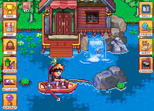
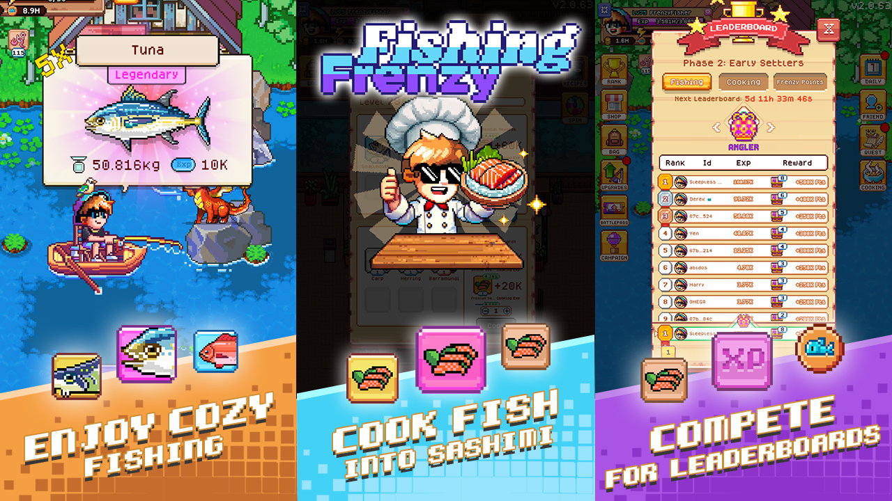

Latest Archives

Top Lists
Best Free Fishing Games in 2026
12 games worth your time — tested across mobile, PC, and browser. No paywalls, no bait-and-switch. Discover your ultimate catch in our definitive guide.

Cozy Realms
15 Games Like Stardew Valley on Mobile
Cozy farming, fishing, and life sims for iOS and Android. For when you've secured peace in your realm and need a relaxing sanctuary on the go.